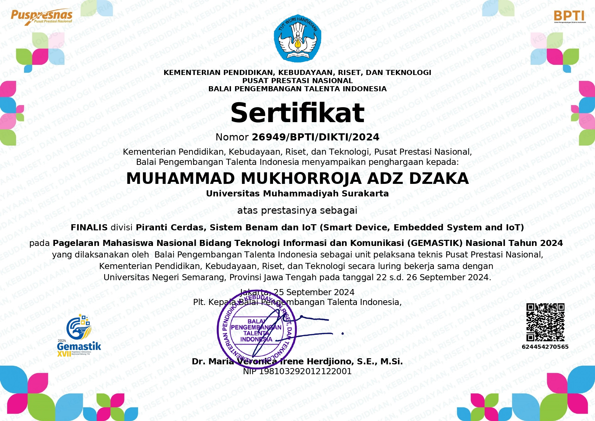
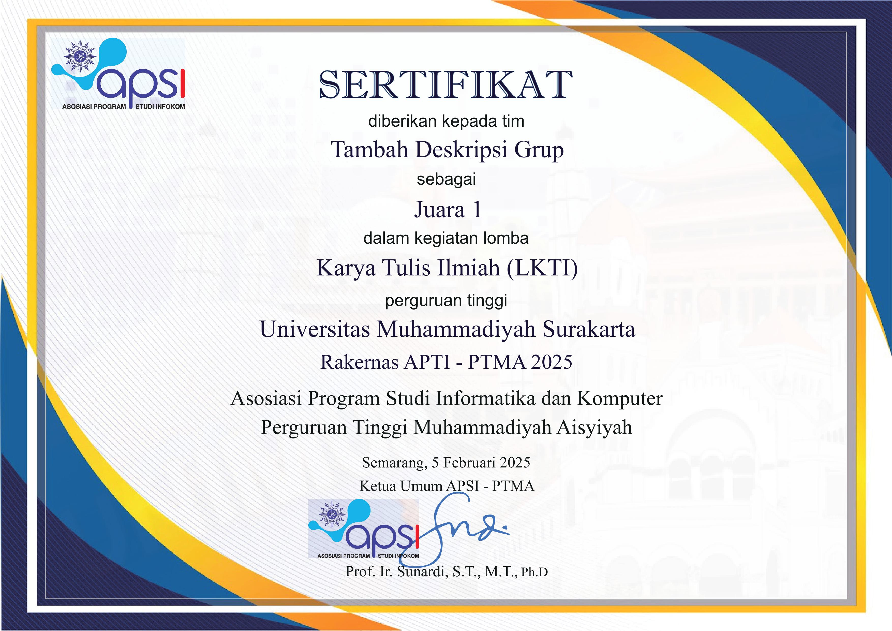
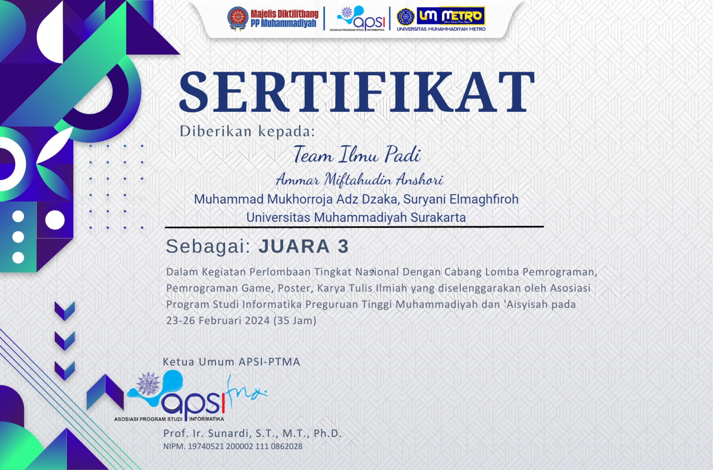

Finalist Gemastik XVII
Membuat IoT untuk monitoring kandungan tanah serta penyiraman otomatis pada lahan pertanian dilengkapi dengan deteksi burung menggunakan computer vision

Juara 1 LKTI APSI-PTMA
Menulis karya tulis berupa perancangan prototipe sepatu monitoring kejang dan kebugaran bagi pengidap epilepsi berbasis machine learning terintegrasi mobile apps

Juara 3 Game Programming
Mengembangkan game edukasi bertema Muhammadiyah untuk anak sekolah dasar yang mencakup sejarah, ideologi, ortom, dan tokoh-tokoh Muhammadiyah